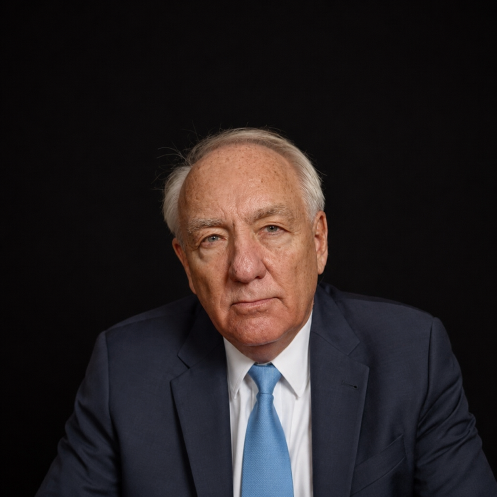

H.E. Ambassador Stephen J. Rapp
Stephen J. Rapp is a Senior Fellow at the United States Holocaust Memorial Museum’s Center for Prevention of Genocide, and at Oxford University’s Center for Ethics, Law, and Armed Conflict. During 2017-2018, he was the Father Robert Drinan Visiting Professor for Human Rights at Georgetown University. He serves as Chair of the Commission for International Justice and Accountability (CIJA), a Senior Peace Fellow of the Public International Law and Policy Group, and on the boards of Physicians for Human Rights, the Syrian Emergency Task Force, the IBA Human Rights Institute, the ABA Rule of Law Initiative, the Siracusa International Institute for Criminal Justice and Human Rights, Guernica 37, and the Center for International Law and Policy in Africa (CILPA).
From 2009 to 2015, he was Ambassador-at-Large heading the Office of Global Criminal Justice in the US State Department. In that position he coordinated US Government support to international criminal tribunals, including the International Criminal Court, as well as to hybrid and national courts responsible for prosecuting persons charged with genocide, war crimes, and crimes against humanity. During his tenure, he traveled more than 1.5 million miles to 87 countries to engage with victims, civil society organizations, investigators and prosecutors, and the leaders of governments and international bodies to further efforts to bring perpetrators to justice.
Rapp was the Prosecutor of the Special Court for Sierra Leone from 2007 to 2009 where he led the prosecution of former Liberian President Charles Taylor. During his tenure, his office achieved the first convictions in history for sexual slavery and forced marriage as crimes against humanity, and for attacks on peacekeepers and recruitment and use of child soldiers as violations of international humanitarian law. From 2001 to 2007, he served as Senior Trial Attorney and Chief of Prosecutions at the International Criminal Tribunal for Rwanda, where he headed the trial team that achieved the first convictions in history of leaders of the mass media for the crime of direct and public incitement to commit genocide.
Before his international service, he was the United States Attorney for the Northern District of Iowa from 1993 to 2001.
He received a BA degree from Harvard, a JD degree from Drake, and several honorary degrees from US universities in recognition of his work for international criminal justice.